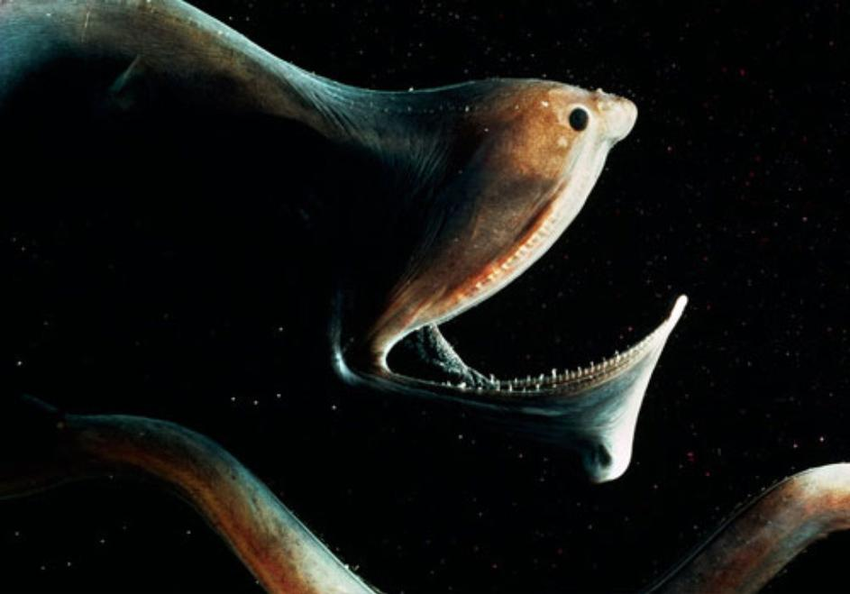
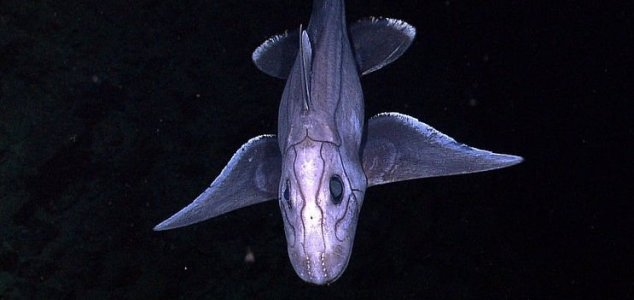
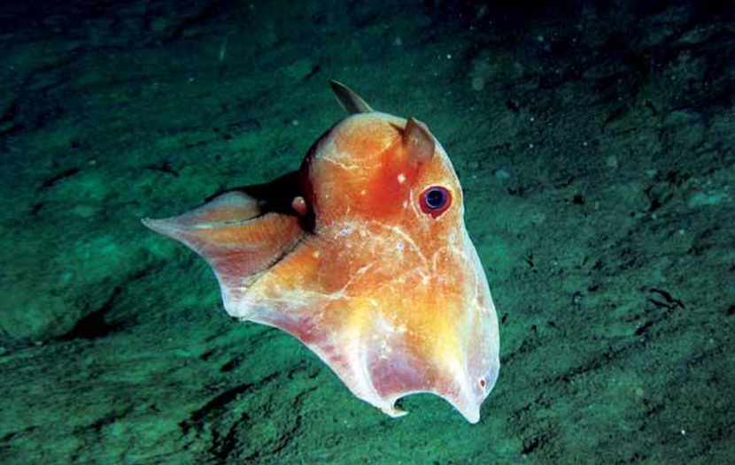
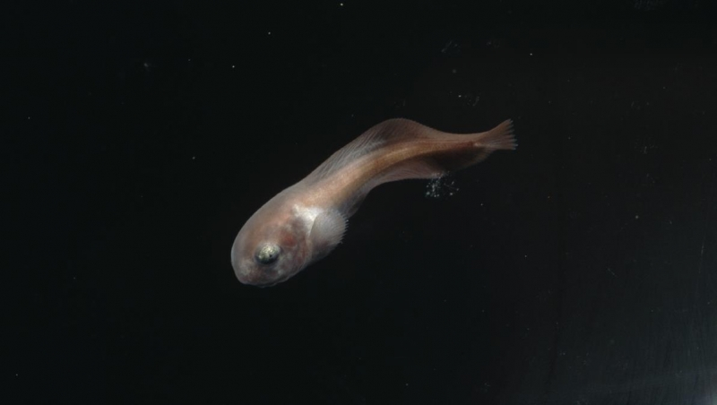

Let's continue with the final part of the planet aliens in this we will come to know about the more wierd and ugly looking fishes of Mariana Trench...
GULPER EEL

The Gulper eel is the most rarest fish of the world ever seen by humans.Gulper fish swims at a depth of 6000m deep and weighs upto 900 gms.The main thing which makes this fish famous is it's wide open mouth.Gulper eel is also called as Pelican eel or Umbrella-mouth eel and the reason of it is because the lower jaw is like pelican, whereas it's body is like eels body.Gulper eels are mostly black in colour but there some subspecies of it which have white strips on their body.Gulper fish can stretch out it's stomach when they have swallowed a large fish than their size.They can swallow a number of small fishes together because of their W-shaped mouth.They mostly feed on small fishes such as crabs,shrimps,cray fishes,etc.Gulper fishes occasionally flashes red colour light as a signal from their tail when they are near by their preys.
GHOST SHARKS

Chimaeras also known as ghost sharks because of their scary appearance were available in abundance once but now they are rarely found that to in the depth of the seas.Ghost sharks currently swim at a depth of 8,500ft deep, they grow upto 150cm whereas they weigh upto 1.5kgs.These sharks are boneless smooth white in colour they have soft body with a single gill to the side of their face.Ghost sharks have small dots present around their head which are sensory organs which helps them to sense their preys even in extreme dark.Ghost sharks are mostly available in rocky parts of the seas.Ghost sharks have large eyes which even turns red no one knows why.People used to think that ghost sharks were myths but later in the year 2009 scientist have discovered this unknown shark which lives at the extreme bottoms of the seas.
DUMBO OCTOPUS

Dumbo octopus have ears around their head the name Dumbo comes from the Disney character 'DUMBO THE FLYING ELEPHANT'.These octopuses swim at a depth of more than 13,000ft the largest dumbo octopus recorded till now was about 1.8m and was weighing 6kgs but the average size of these octopuses is just 20cm these octopuses have big dark blue coloured eyes which makes them look even more beautiful.Dumbo octopuses are the deepest swimming octopuses of the whole world.As they are the smallest octopus species they feed on small sea worms,oysters,crabs,shrimps,etc.Dumbo octopuses have threats from sharks,deep-swimming whales and even humans.
SNAILFISH

Compared to all the fishes snailfishes are the deepest swimming fishes of the world.These fishes are very rarely known to human because they swim at the extreme depth of the sea.Snailfishes are similar to salamanders because of their smooth,elongated slimy bodies and they even have eyes to like salamanders and toads.Snailfishes lengths upto 77cm and weighs upto 11kgs.There are about more than 400 types of snailfishes.The food of snailfishes consits a variety of small fishes such as crabs,shrimps,crayfishes,sea cucumbers,etc.
AUTHOR: Anupam Adak
Anupam is a person who is very keen about learning whatever he sees interesting.He dreams to become a hardcore coder through success in Biotech.